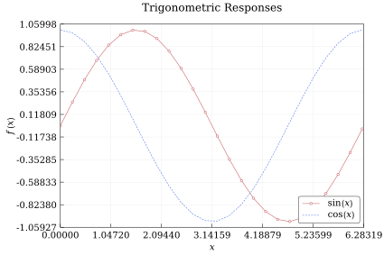
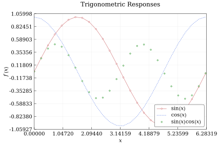
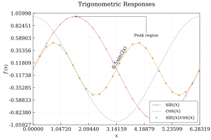
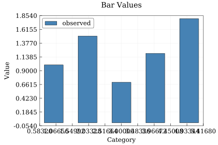

Chart Tutorial
This tutorial walks through the main single-chart workflow: configure axes, add several kinds of series, annotate the plot, and export the result.
Create a Chart
Start with data and a Chart. Empty xlimits and ylimits use automatic limits, while explicit two-element vectors fix the range.
using QuickCharts
x = collect(0:0.25:2π)
chart = Chart(
size = (15cm, 10cm),
title = "Trigonometric Responses",
background = :white,
xlabel = "`x`",
ylabel = "`f(x)`",
xlimits = [0, 2π],
legend = :bottom_right,
)Chart(size=425.1968503937008 x 283.46456692913387 pt, title="Trigonometric Responses", axes="`x`" vs "`f(x)`", series=0, annotations=0, legend=:bottom_right)Add Line and Scatter Series
add_line draws connected values. Markers can be added with mark, and line_style controls the stroke pattern.
add_line(chart, x, sin.(x); mark = :circle, label = "`sin(x)`")
add_line(chart, x, cos.(x); color = :royal_blue, line_style = :dash, label = "`cos(x)`")
save(chart, "tutorial-lines.svg")
add_scatter defaults to points without connecting lines:
add_scatter(
chart,
x,
sin.(x) .* cos.(x);
color = :green,
mark = :diamond,
label = "`sin(x) cos(x)`",
)
save(chart, "tutorial-scatter.svg")
Add Tags and Annotations
A series tag follows a data series. tag_anchor specifies which side of the tag box is attached to the curve point.
add_line(
chart,
x,
0.5 .* sin.(2x);
color = :dark_orange,
tag = "`0.5 sin(2x)`",
tag_pos = 0.54,
tag_anchor = :bottom,
tag_orientation = :parallel,
tag_padding = 1.2,
tag_font_size = 10.0,
)LineSeries(n=26, style=:solid, mark=:none, order=4)Annotations are positioned in normalized plot coordinates, where (0, 0) is the lower-left of the plot area and (1, 1) is the upper-right. The anchor keyword selects which side of the annotation box is attached to that reference point.
add_annotation(
chart,
"Peak region",
[0.75, 0.8];
anchor = :right,
target = [π / 2, 1.0],
)Annotation("Peak region", 0.75, 0.8, :right, [1.5707963267948966, 1.0], true, 0.4, "serif", nothing, :black)Export
Use save to render the chart. The output format is chosen from the file extension.
save(chart, "tutorial-chart.svg")
Bar Charts
Bars use the same chart object and legend machinery:
bar_chart = Chart(
size = (15cm, 10cm),
title = "Bar Values",
font_size = 12.0,
background = :white,
xlabel = "Category",
ylabel = "Value",
legend = :top_left,
)
add_bar(
bar_chart,
1:5,
[1.0, 1.5, 0.7, 1.2, 1.8];
color = :steel_blue,
label = "observed",
)
save(bar_chart, "tutorial-bars.svg")